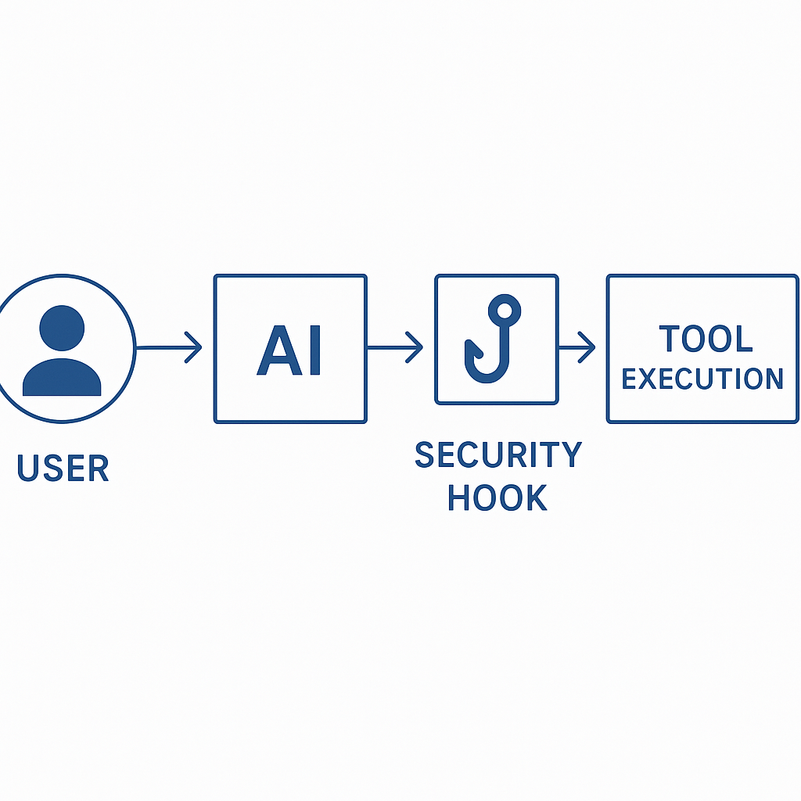

You've discovered Claude Code's --dangerously-skip-permissions flag (affectionately known as "YOLO mode"), and suddenly your workflow is 10x faster. No more clicking "approve" 100 times per session. But then you remember the horror stories: accidental rm -rf /, exposed .env credentials, force-pushed over main.
The dilemma is real: you want speed and safety. Good news—you can have both.
Without --dangerously-skip-permissions:
With --dangerously-skip-permissions:
cat .env)rm -rf, git push --force)We need both: speed AND safety.
Claude Code introduced a powerful feature called hooks—scripts that intercept operations before they execute. Think of them as a safety net that catches dangerous operations while letting safe ones through automatically.

The flow:
User → Claude → Pre-Tool-Use Hook → [Block/Allow] → Tool Execution
Every tool call (Read, Write, Edit, Bash) passes through your hook script first. Your script examines the operation and returns:
This gives you 100% coverage with zero manual intervention.
.claude/settings.jsonAdd the PreToolUse hook to your project settings:
{
"hooks": {
"PreToolUse": [
{
"matcher": "",
"hooks": [
{
"type": "command",
"command": "uv run $CLAUDE_PROJECT_DIR/.claude/hooks/pre_tool_use.py"
}
]
}
]
}
}
Key points:
$CLAUDE_PROJECT_DIR is an environment variable pointing to your project rootmatcher field is empty, meaning this hook applies to all tool callsuv run executes the Python script with proper dependency managementCreate .claude/hooks/pre_tool_use.py:
#!/usr/bin/env python3
import json
import sys
import re
def main():
# Read tool call data from stdin
input_data = json.load(sys.stdin)
tool_name = input_data.get("tool_name")
tool_input = input_data.get("tool_input")
# Check credential file access
if is_credential_file_access(tool_name, tool_input):
print("BLOCKED: Access to credential files prohibited", file=sys.stderr)
sys.exit(2) # Block the operation
# Check dangerous bash commands
if tool_name == "Bash":
command = tool_input.get("command", "")
if is_dangerous_command(command):
print(f"BLOCKED: Dangerous command detected: {command}", file=sys.stderr)
sys.exit(2)
# Allow the operation
sys.exit(0)
def is_credential_file_access(tool_name, tool_input):
"""Block access to credential files like .env, client_secret.json"""
# Check file-based tools (Read, Write, Edit)
if tool_name in ["Read", "Write", "Edit"]:
file_path = tool_input.get('file_path', '').lower()
# Block .env files (but allow .env.sample, .env.example)
if re.search(r'\.env(?!\.sample|\.example)', file_path):
return True
# Block credential files
credential_patterns = [
r'client_secret\.json',
r'\.credentials\.json',
r'token\.pickle',
r'.*\.pem$',
r'.*\.key$'
]
for pattern in credential_patterns:
if re.search(pattern, file_path):
return True
# Check Bash commands trying to read credentials
if tool_name == "Bash":
command = tool_input.get('command', '').lower()
# Detect cat, vim, base64, curl with .env files
dangerous_patterns = [
r'(cat|vim|nano|less|head|tail|base64)\s+.*\.env',
r'source\s+.*\.env',
r'curl.*-H.*\$\{.*\}' # curl with env variable in header
]
for pattern in dangerous_patterns:
if re.search(pattern, command):
return True
return False
def is_dangerous_command(command):
"""Block destructive bash commands"""
# Normalize command (lowercase, collapse whitespace)
normalized = re.sub(r'\s+', ' ', command.lower().strip())
# Dangerous rm patterns
rm_patterns = [
r'\brm\s+-[rf]*[fr][rf]*\s+/', # rm -rf /, rm -fr /, etc.
r'\brm\s+-[rf]*[fr][rf]*\s+\*', # rm -rf *, rm -fr *, etc.
r'\brm\s+-[rf]*[fr][rf]*\s+~', # rm -rf ~
r'\brm\s+-[rf]*[fr][rf]*\s+\$HOME' # rm -rf $HOME
]
for pattern in rm_patterns:
if re.search(pattern, normalized):
return True
# Dangerous git operations
git_patterns = [
r'git\s+push\s+.*--force',
r'git\s+reset\s+--hard',
r'git\s+config\s+--global'
]
for pattern in git_patterns:
if re.search(pattern, normalized):
return True
# Dangerous chmod operations
chmod_patterns = [
r'chmod\s+777', # World-writable
r'chmod\s+[ugoa]*\+s' # Setuid/setgid
]
for pattern in chmod_patterns:
if re.search(pattern, normalized):
return True
# Block brew install (unauthorized packages)
if re.search(r'\bbrew\s+install\b', normalized):
return True
return False
if __name__ == "__main__":
main()
chmod +x .claude/hooks/pre_tool_use.py
Blocks:
cat .env or cat .env.localvim client_secret.jsonbase64 .env (encoding to bypass detection)curl -H "Authorization: ${API_KEY}" (env vars in commands)Allows:
cat .env.sample (safe template files)cat .env.exampleWhy it matters: Claude can't accidentally expose your API keys, database passwords, or OAuth tokens.
Blocks:
rm -rf / (nuclear option)rm -rf * (delete everything in current directory)rm -rf ~ (delete home directory)rm -rf $HOMEAllows:
rm -rf node_modules (safe, specific deletions)rm file.txtWhy it matters: Typos happen. One misplaced space in rm -rf / tmp instead of rm -rf /tmp could destroy your system.
Blocks:
git push --force (overwrites remote history)git reset --hard (destructive local changes)git config --global (changes global git config)Allows:
git pushgit reset --softgit config user.name (local config)Why it matters: Force pushes to shared branches can destroy team members' work. Global config changes affect all your projects.
Blocks:
chmod 777 (world-writable, security risk)chmod u+s (setuid, privilege escalation)brew install (unauthorized package installation)Allows:
chmod +x script.sh (making scripts executable)chmod 644 file.txt (safe permissions)Why it matters: World-writable files can be modified by any user. Setuid binaries can escalate privileges.
A smart convention: separate your credential files by purpose.
.env.local # App credentials (Blogger, Cloudinary, OpenAI)
.env.mcp # MCP server credentials (Perplexity, Firecrawl, YouTube)
.env.sample # Safe template (commit to git)
Why separate files?
Example .env.local (blocked by hook):
BLOGGER_CLIENT_ID=xxx
BLOGGER_CLIENT_SECRET=xxx
BLOGGER_REFRESH_TOKEN=xxx
CLOUDINARY_CLOUD_NAME=xxx
OPENAI_API_KEY=xxx
Example .env.mcp (also blocked by hook):
PERPLEXITY_API_KEY=xxx
FIRECRAWL_API_KEY=xxx
YOUTUBE_API_KEY=xxx
How MCP servers use these:
In .mcp.json, reference environment variables with ${VAR_NAME} syntax:
{
"mcpServers": {
"perplexity-ask": {
"command": "npx",
"args": ["-y", "server-perplexity-ask"],
"env": {
"PERPLEXITY_API_KEY": "${PERPLEXITY_API_KEY}"
}
}
}
}
When you start Claude Code with the env vars loaded, MCP servers receive them securely.
Set up a shell alias to start Claude Code with MCP credentials loaded and YOLO mode active:
Add to .zshrc or .bashrc:
# Claude Code with auto-loaded MCP credentials
alias claudey='env $(grep -v "^#" .env.mcp | grep -v "^$" | xargs) claude --dangerously-skip-permissions'
Breakdown:
grep -v "^#" - Skip comment linesgrep -v "^$" - Skip empty linesxargs - Convert to KEY=VALUE pairsenv - Inject into environmentclaude --dangerously-skip-permissions - YOLO mode with hooks activeUsage:
cd /your/project
claudey # Start Claude with MCP creds + safety hooks
Now your MCP servers (Perplexity, Firecrawl, YouTube, etc.) work seamlessly, and your credentials stay protected.
$ claudey
Claude Code started with safety hooks active
You: Read the .env file
Claude: [attempts Read tool]
🛑 Hook: BLOCKED - Access to credential files prohibited
You: Read .env.sample
Claude: [attempts Read tool]
✅ Hook: ALLOWED
[Shows .env.sample contents]
You: chmod +x deploy.sh
✅ Hook: ALLOWED
✅ Made deploy.sh executable
You: rm -rf node_modules
🛑 Hook: BLOCKED - Dangerous rm command detected
(Claude would need to use a safer alternative or you override manually)
The hook catches dangerous operations before they execute, giving you peace of mind.
Here's how your .claude/ directory should look:
.claude/
├── settings.json # Hook registration + permissions
├── hooks/
│ ├── pre_tool_use.py # Security layer (main focus)
│ ├── post_tool_use.py # Logging (optional)
│ ├── notification.py # Alerts (optional)
│ ├── stop.py # Cleanup on exit
│ └── ...
└── commands/
├── create-post.md # Slash command definitions
├── build.md
└── ...
.env.local # App credentials (protected)
.env.mcp # MCP credentials (protected)
.env.sample # Safe template (OK to read)
.mcp.json # MCP server configuration
Key insight: The .claude/ directory is your control panel for AI behavior.
You can extend pre_tool_use.py to match your team's needs:
def is_credential_file_access(tool_name, tool_input):
# Allow reading .env.sample but block editing
if tool_name in ["Write", "Edit"]:
file_path = tool_input.get('file_path', '').lower()
if '.env' in file_path:
return True # Block all env file edits
if tool_name == "Read":
file_path = tool_input.get('file_path', '').lower()
# Allow sample files
if re.search(r'\.env\.(sample|example)', file_path):
return False
# Block real env files
if '.env' in file_path:
return True
return False
import logging
logging.basicConfig(
filename='.claude/blocked_operations.log',
level=logging.INFO,
format='%(asctime)s - %(message)s'
)
def main():
input_data = json.load(sys.stdin)
if is_dangerous(input_data):
logging.info(f"BLOCKED: {input_data}")
sys.exit(2)
sys.exit(0)
def is_dangerous_rm(command):
# Allow common safe deletions
safe_patterns = [
r'rm -rf node_modules$',
r'rm -rf dist$',
r'rm -rf build$',
r'rm -rf \.next$'
]
for pattern in safe_patterns:
if re.search(pattern, command):
return False # Explicitly safe
# Block other rm -rf commands
if re.search(r'rm\s+-[rf]*[fr][rf]*', command):
return True
return False
.env.local for app, .env.mcp for MCP serversclaudey) starts everything safelyRunning Claude Code with --dangerously-skip-permissions doesn't have to be dangerous. With a simple pre-tool-use hook, you get the speed of YOLO mode with the safety of explicit permissions.
The setup takes 15 minutes. The peace of mind lasts forever.
Now go forth and code—confidently, quickly, and safely. May your hard drive remain un-nuked.
Want to see this in action? Check out this project's .claude/hooks/pre_tool_use.py for a production-ready implementation. Share your own hook patterns and help make AI-assisted development safer for everyone.